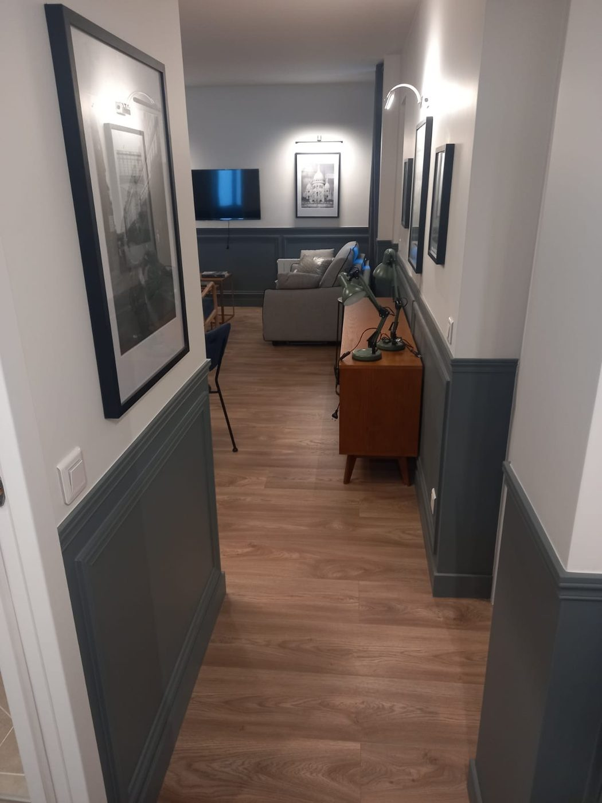

Sous-traitance de second œuvre
Architectes, maîtres d'œuvre, syndics, agences et régies. Exécution sur plans, remises en état et parties communes, en Île-de-France.

Pour qui
Quatre types de donneurs d'ordre
Avec qui nous travaillons
- Architectes, décorateurs et maîtres d'œuvreExécution sur plans et nuanciers fournis : peinture, cloisons, sols, agencement sur mesure, finitions décoratives. Échantillon systématique avant application.
- Syndics de copropriétéCages d'escalier, halls, couloirs et parties communes, peinture comme revêtements de sol. Devis au format attendu pour présentation en assemblée générale, intervention en site occupé.
- Agences immobilières et régiesRemises en état entre deux locations. Délai court, chiffrage sur photos, intervention entre état des lieux de sortie et d'entrée.
- Entreprises générales et maîtres d'œuvreLot peinture en sous-traitance sur chantier de rénovation d'appartement.
Capacité
Ce que nous pouvons tenir
Notre capacité réelle
Nous sommes une structure récente et volontairement petite. Nous préférons l'annoncer que découvrir un dépassement en cours de chantier.
- Effectif[À compléter : nombre de compagnons mobilisables.]
- Volume traitable[À compléter : surface de peinture réalisable par mois.]
- Délai de mobilisation[À compléter : délai type entre acceptation du devis et démarrage.]
- Lots couvertsPeinture, plâtrerie et cloisons, parquet, carrelage et faïence, agencement sur mesure, revêtements muraux, finitions décoratives, vitrerie.
- Type de chantier adaptéAppartements, plateaux de bureaux, commerces, parties communes. Nous ne prenons pas de marché nécessitant plusieurs équipes simultanées.
Documents
Dossier administratif
Documents administratifs
Nous transmettons sous 24 heures l'ensemble des pièces nécessaires à l'ouverture de compte fournisseur et à la constitution d'un dossier de sous-traitance.
- Extrait Kbis, RCS Paris 101 699 676
- Attestation d'assurance décennale couvrant la rénovation intérieure, et RC professionnelle
- Attestation de vigilance URSSAF
- Attestation de régularité fiscale
- Liste nominative des salariés étrangers le cas échéant
- RIB et coordonnées de facturation
[Ne publier ce bloc qu'une fois les attestations réellement en main.]
Collaboration
De la consultation à la réception
Comment nous travaillons avec vous
Consultation
Vous nous transmettez plans, descriptif ou simples photos. Nous accusons réception sous 24 heures et nous vous disons immédiatement si le chantier entre dans notre capacité.
Chiffrage
Devis quantitatif détaillé sous 5 jours ouvrés, au format de votre descriptif. Nous signalons les surfaces sous-estimées plutôt que de les découvrir en cours d'exécution.
Échantillon
Sur toute teinte sur mesure ou finition décorative, application d'un échantillon sur site et validation écrite avant lancement. Cela évite l'essentiel des litiges.
Réception
Autocontrôle avant réception, PV, levée de réserves sous quinze jours.
Questions fréquentes
4 réponses
Questions fréquentes
Travaillez-vous sur nuancier imposé ?
Oui, RAL, NCS, Farrow & Ball, Ressource ou tout autre nuancier. Nous appliquons un échantillon sur site avant validation, car une teinte ne rend jamais comme sur la planche.
Intervenez-vous en site occupé ?
Oui, en logement comme en bureau, avec protection des circulations, travail par zones et peintures à faible teneur en COV. Nous adaptons les horaires aux contraintes de l'immeuble.
Quels sont vos délais de paiement ?
Acompte à la commande, situations mensuelles au-delà d'un mois de chantier, solde à la réception. Nous acceptons la retenue de garantie contractuelle.
Prenez-vous des chantiers de petite taille ?
Oui. Une cage d'escalier, un studio à remettre en état ou un seul mur décoratif nous intéressent autant qu'un appartement complet.
Chiffrez-vous sur DPGF ?
Oui. Transmettez votre DPGF au format tableur, nous la remplissons ligne à ligne et nous signalons les postes qui nous semblent sous-estimés.
Passer à l'action
Réponse sous 24 h
Consultez-nous sur un chantier
Envoyez vos plans, votre descriptif ou simplement des photos. Nous répondons sous 24 heures.